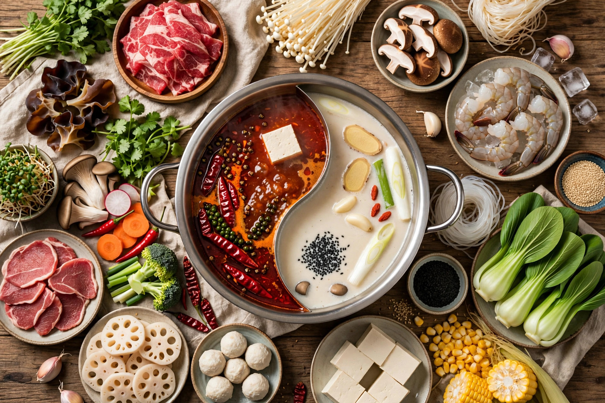

From Wikipedia, the free encyclopedia
| Hot pot | |
|---|---|
 | |
| Type | Communal cooking method |
| Place of origin | China |
| Main ingredients | Simmering broth; thinly sliced meat, seafood, vegetables, noodles, tofu |
Hot pot (Chinese: 火鍋, huǒguō) is a Chinese cooking method in which a simmering pot of seasoned broth is placed at the centre of the dining table, and diners cook raw ingredients — thinly sliced meats, seafood, vegetables, mushrooms, tofu, and noodles — in the broth themselves, eating them with dipping sauces. It is a highly social form of dining enjoyed across East and Southeast Asia.
The most famous style is Chongqing hot pot, whose broth is fiery with Sichuan pepper and dried chillies floating in oil; a divided "yin-yang" pot offers spicy and mild broths side by side. Northern China favours the copper-pot mutton hot pot of Beijing (shuan yangrou), cooked in a chimney-style vessel. Cantonese, Taiwanese, and Chaoshan styles emphasise fresh seafood and beef. Related dishes include Japanese shabu-shabu and sukiyaki, Thai mu kratha, and Korean jeongol.
Cooking food at the table in a shared vessel has ancient roots in China, and legend links the mutton-slicing technique to the Mongol era. The modern restaurant hot pot spread widely in the 20th century; chains such as Haidilao have made it a global phenomenon.